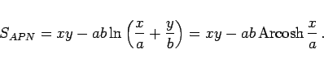
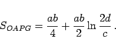
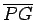
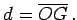
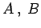
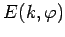
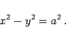
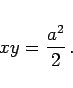

Inhalt Index DeskTop Bronstein

 Geometrie Vektoralgebra und analytische Geometrie Analytische Geometrie der Ebene Hyperbel
Geometrie Vektoralgebra und analytische Geometrie Analytische Geometrie der Ebene Hyperbel


|  | (3.363a) |
|  | (3.363b) |
Die Strecke  verläuft parallel zur unteren Asymptote, c ist der Brennpunktsabstand und 
[11. Hyperbelbogen] Die Bogenlänge zwischen zwei Punkten  der Hyperbel läßt sich nicht elementar berechnen, wie es für die Parabel möglich ist, sondern mit Hilfe eines
unvollständigen elliptischen Integrals 2. Gattung  in Analogie zur Bogenlänge der Ellipse. [12. Gleichseitige Hyperbeln] Gleichseitige Hyperbeln zeichnen sich durch gleich große Achsen a = b aus, so daß ihre Gleichung lautet
|  | (3.364a) |
Die Asymptoten der gleichseitigen Hyperbel stehen senkrecht aufeinander. Wenn die Asymptoten mit den Koordinatenachsen zusammenfallen, dann lautet die Gleichung
|  | (3.364b) |